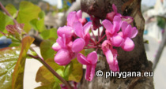

| Phrygana: la Nature en Crète principalement, mais aussi d'ailleurs ... |
|  |
|
|
| Cercis siliquastrum | Oxalis stricta | Gnaphalium uliginosum |
| Espèces: 1207--- Faune: 489 -- Flora: 696 -- Galles (Bacteria): 2 -- Champignons: 19 -- Lichens: 1 | |||||
| Nouveautés | |||||
| Flora: | Aesculus parviflora | Flora: | Cotinus coggygria | Flora: | Lamium galeobdolon subsp. argentatum |
| Flora: | Erysimum cheiranthoides | Fauna: | Acer pseudoplatanus cv. 'Leopoldii' | Flora: | Symphytum officinale |
| Fauna: | Lomatia polyzona | Flora: | Dactylis glomerata | Fauna: | Oxythyrea cinctella |
| 17 août 2021 |